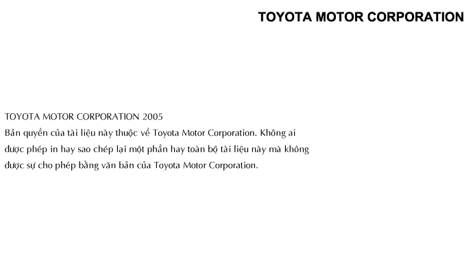

Đây là cuốn Tập 1 của Cẩm Nang Sửa chữa xe INNOVA. Trong bộ sách gồm có 4 tập. Các chương trong từng tập sách có dấu mục lục chương. Hãy dùng mục lục để tìm tập sách và chương cần dùng.
Các Model xe áp dụng
Xêri TGN40
Hãy tham khảo các cuốn cẩm nang sau đây để biết thêm các thông số sửa chữa và quy trình sửa chữa cho kiểu xe này.
Tên cẩm nang sửa chữa
Pub. No.
Sơ đồ mạch điện xe INNOVA
EM00K0EV
Đặc điểm xe mới INNOVA TOYOTA
NCF292E
Tất cả các thông tin trong cuốn cẩm nang này là căn cứ vào thông tin sản phẩm mới nhất tại thời điểm xuất bản. Tuy nhiên, các thông số kỹ thuật và các quy trình sửa chữa có thể thay đổi mà không cần báo trước.
Nếu phát hiện thấy bất cứ lỗi nào trong cuốn cẩm nang này, bạn hãy vui lòng báo cho chúng tôi bằng cách dùng mẫu báo cáo ở trang sau.

Báo cáo chất lượng Cẩm Nang Sửa Chữa Kính gửi: Nhóm xuất bản, Công ty ôtô Toyota Việt Nam